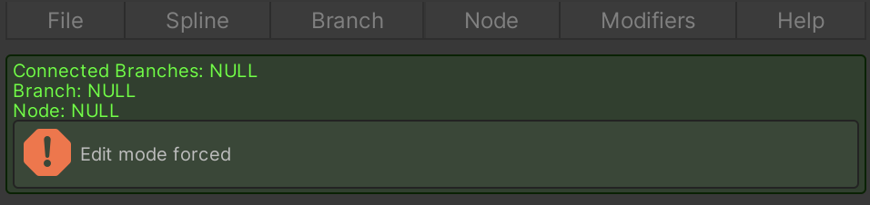
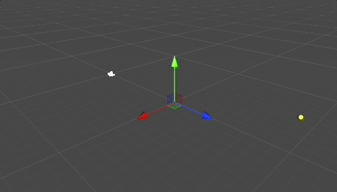
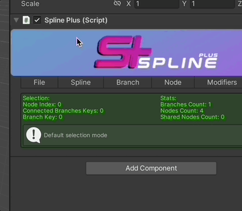
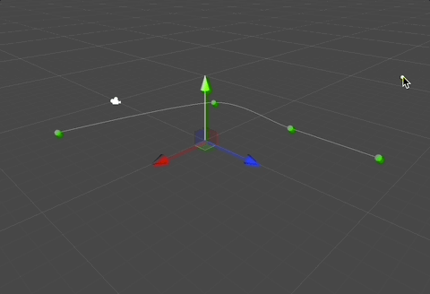
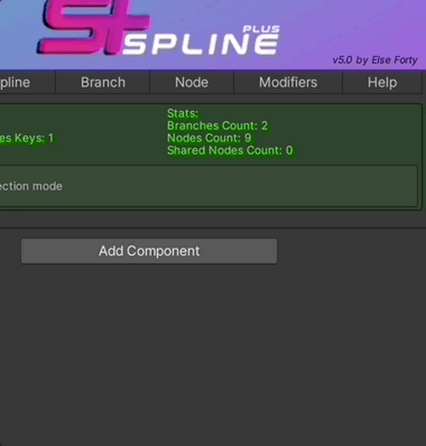
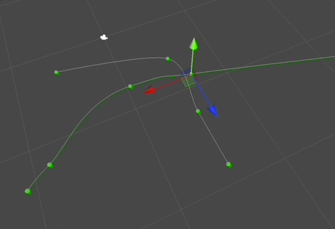
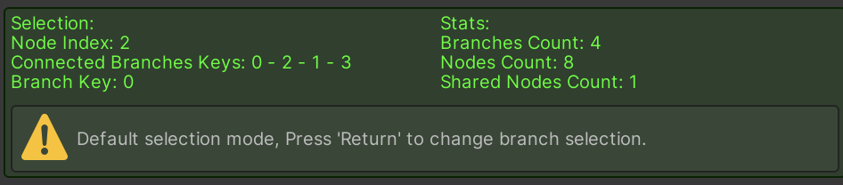
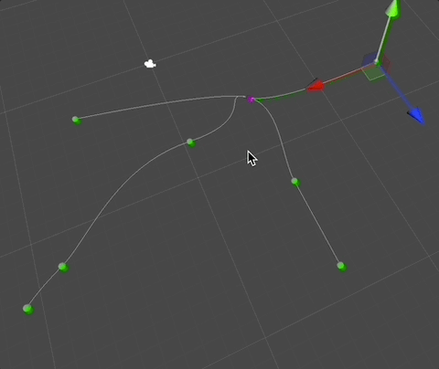

Drawing Your First Spline
Follow these steps to draw your first spline using Spline Plus:
Add Spline Plus FollowerGameObject to Scene:
- Navigate to
Tools>Spline Plus. - Select
Spline PlusFollowerGameObject. - Go to its inspector.
- Navigate to
Editor Mode Initialization:
- Since there are no nodes or branches yet, Spline Plus will automatically enable the editor mode to facilitate spline creation.

- Click anywhere in the Scene View to add your first node.

- Add Another Branch:
- In the toolbar of the
Spline PlusFollowerGameObject, navigate toBranch>Add.
- In the toolbar of the

- Adding Nodes to the New Branch:
- Click in the Scene View to add nodes for the newly created branch.

- Press
Escon your keyboard to exit edit mode and switch back to selection mode once you're done adding nodes.
- Fusing Nodes:
- To connect the selected node to another one in a different branch.
- Navigate to the
Spline Plustoolbar, thenNode>Fuse.

- Click the node you want to fuse with the selected node.
- A sharedData node will be created.

- You can check the debug area while selecting the sharedData node to view the sharedData node index in the selected branch, the connected branches key of the sharedData node, and the branch key of the currently selected branch.

- Switching Selection Between Connected Branches:
- A shortcut to switch selection between the branches connected to the sharedData node:
- Make sure you're selecting the sharedData node.
- Press
Returnon your keyboard.
- A shortcut to switch selection between the branches connected to the sharedData node:

Follow these steps to create your first spline in Spline Plus. Experiment with different nodes and branches to achieve your desired spline shape and complexity.